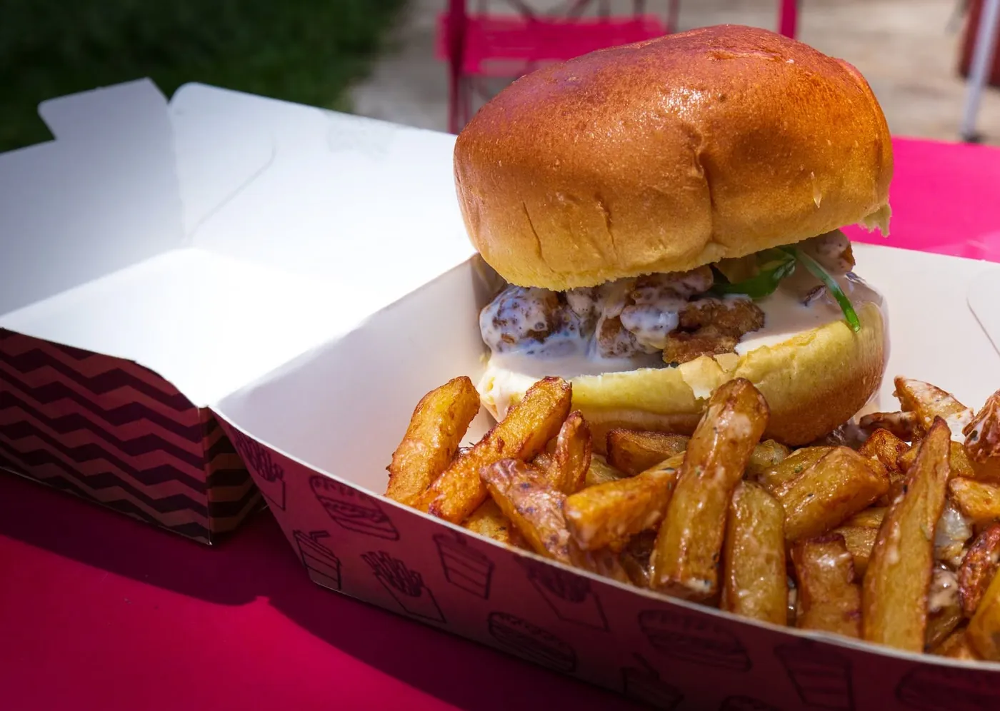
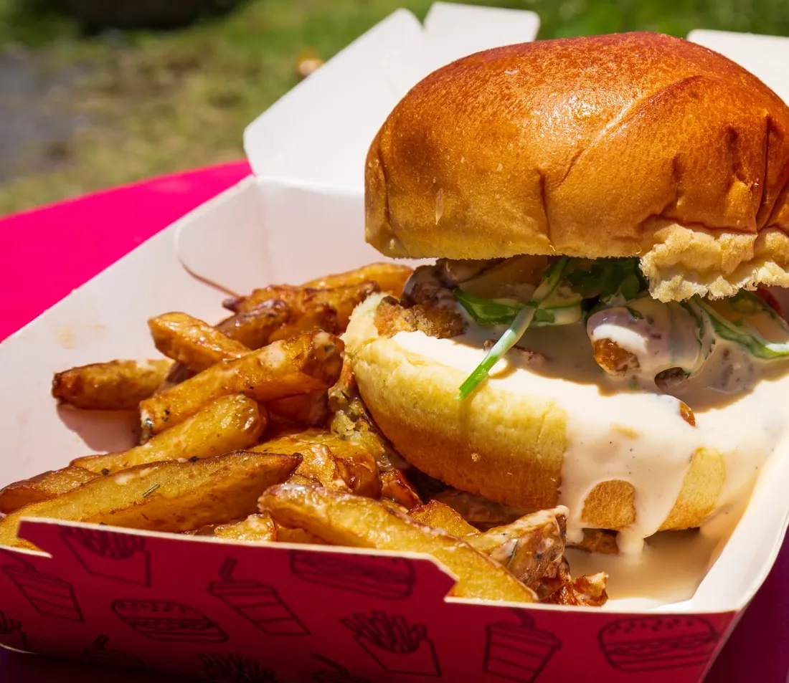
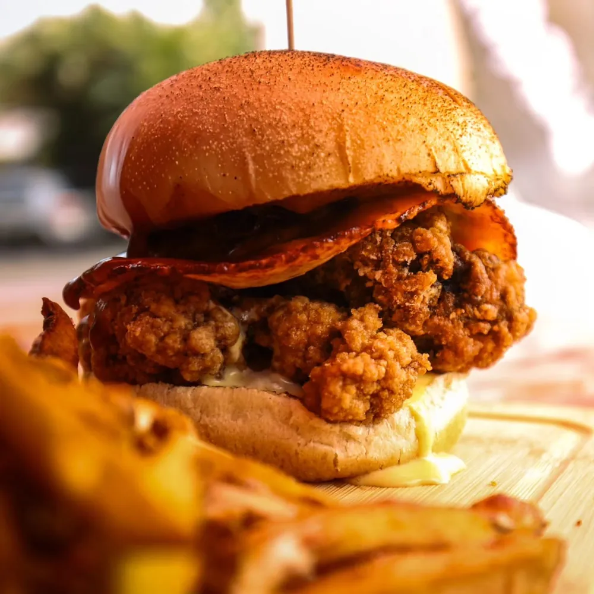
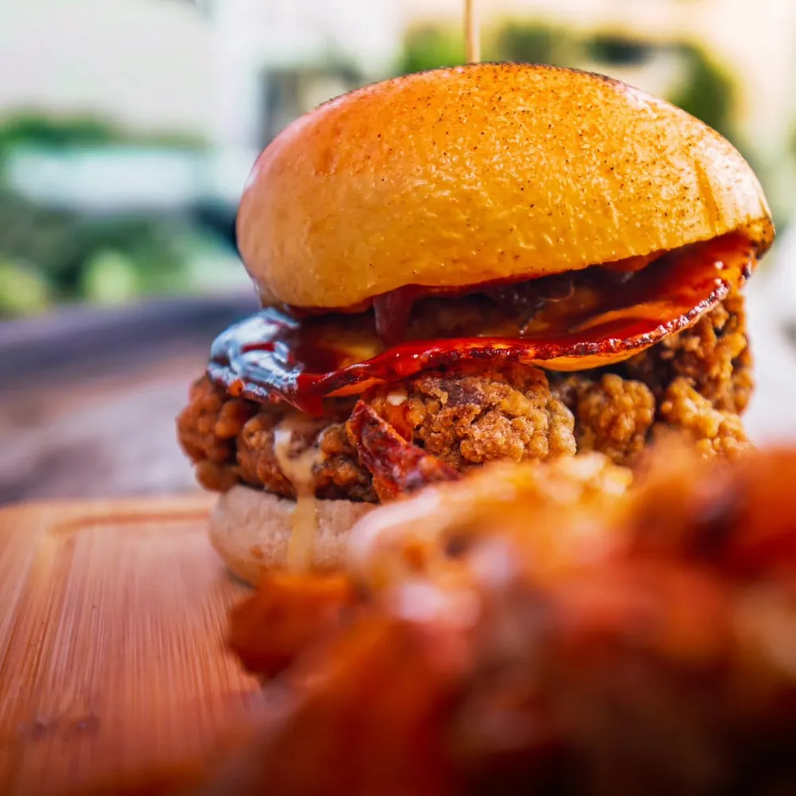
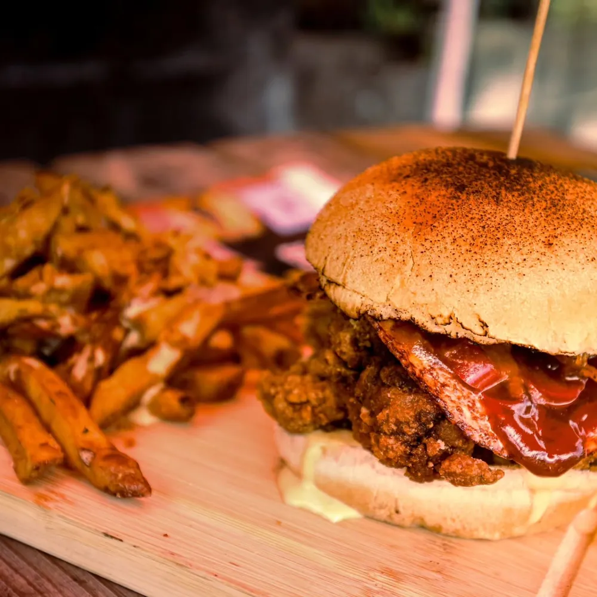
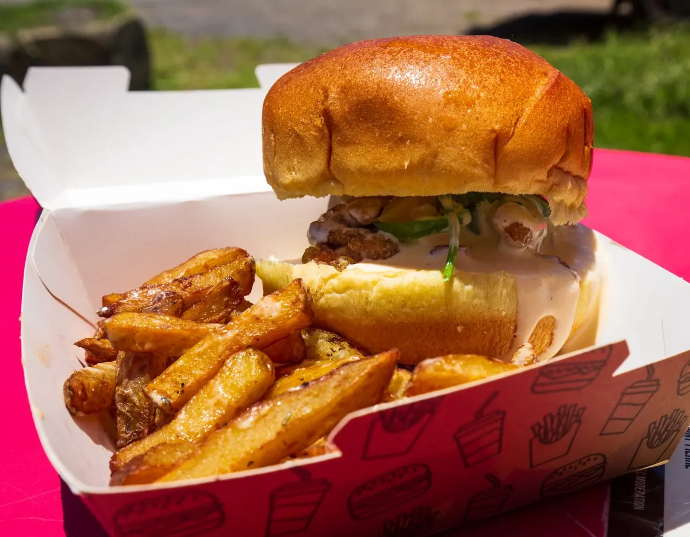

Burgers faits maison
Des recettes créées au camion, réalisées aux saveurs 974 : massalé, citron, gros piment…
« vous faire découvrir des burgers fait maison réalisés aux saveurs 974 »
Food truck · Saint-André · La Réunion
Des burgers faits maison aux saveurs 974, des produits frais et locaux… et l'envie de partager des émotions.
Rond-point de l'AFPAR · Saint-André
Notre esprit
Ze Top Burger, c'est un camion noir, une tonnelle rouge illuminée de guirlandes et une cuisine qui mélange l'esprit burger et les épices de l'île.
Des recettes créées au camion, réalisées aux saveurs 974 : massalé, citron, gros piment…
« vous faire découvrir des burgers fait maison réalisés aux saveurs 974 »Un burger, c'est aussi un moment : entre amis sous la tonnelle, en famille, ou lors des grands rendez-vous de l'île.
« partager des émotions »Des produits frais et locaux, des frites fraîches maison et une sauce maison pour signer chaque burger.
« des produits frais et locaux »des avis publiés sur la page Facebook recommandent TopBurger.
6 avis, page Facebook TopBurger
Le burger du mois · novembre 2026
Le burger du mois chez TopBurger : un hommage gourmand aux saveurs indiennes de La Réunion, servi avec ses frites maison.

Burger du moisSorti du camion
Faites glisser pour voir les burgers →




Le camion
Notre point d'attache : le rond-point de l'AFPAR, chemin Lagourgue, à Saint-André. Et le camion aime voyager à la rencontre des gourmands de toute l'île :
Une soirée entre amis, un repas d'équipe, une grande tablée en famille : faites plaisir à tout le monde avec une commande Ze Top Burger pour Noël.
On se retrouve ?
Ouvertures et rendez-vous annoncés chaque semaine sur nos réseaux.